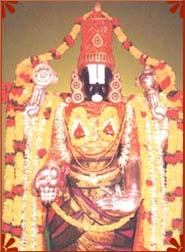

|  |
Balaji Temple :- Main artical:-Balaji Temple Histori :- Balaji Temple at Nerul, Mumbai is the exact replica of Balaji Temple at Tirupati. This temple is built on the lines of Venkateshwara Temple at Tirupati and has been constructed according to the Shilpashastras. Others temples - Vidya Ganapati Temple, Shri Padmavati Devi Temple, Hanumana Temple, Vishvakasena Temple, Ramanuja Temple, and Lakshmi Nrisimha Temple surround the main temple. 'Bali Peetham' and the tall 'Dhwaja Stambham' can be seen as one enters the temple. Next to the Bali Peetham and the Dwaja Stambham, a flight of steps leads to the 'Tiru Mamani Mandapam'. The structure of the Mani Mandapam has been built based on modern architectural practices. The cement concrete surfaces are being dubbed with exquisitely carved granite stones. Behind the Ardha Mandapam, there is the 'Garbha Griham'. At the right foot of the lord is a small silver idol, which is called 'Bhoga Srinivasa' or 'Kautuka Bera'. This idol imbibes the essence of the Lord and is loosely bonded to the main 'Moolavar' idol by a string. There are also other idols like Shrinivasa with Sridevi and Bhoodevi made of 'Pancha Loha' known as Utsava idols (images for festivities). There are also the idols of Shri Rama, Sita, Lakshmana and Anjaneya, Shri Krishna with Rukmini. |